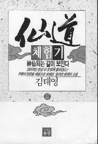

| Echange spirituel |
et la Méthode Guan Yin |
|  | Mes expériences du Xian Tao |
Ce qui suit est un extrait du volume 37 de la série des romans de recherche de la vérité, "Mes expériences du Xian Tao", par Kim Tae-Young. L'auteur est un journaliste devenu romancier, qui a travaillé 23 ans au Korea Times et au Korea Herald, les journaux anglais les plus importants de Corée. Il a obtenu trois prix de littérature d'organismes comme le magazine littéraire mensuel, Hankook Moonhak, et la Samsung Art Foundation, et le MBC Broadcasting System. C'est un pratiquant spirituel du Sam Gong Xian Tao qui comporte trois voies de pratique : le corps, le mental et le Chi ; c'est lui-même qui l'a créé. Un grand nombre d'étudiants suivent sa pratique de méditation ; lui et quelques-uns de ses étudiants méditent aussi selon la Méthode Pratique enseignée par Maître, et suivent Ses enseignements.
Le volume 42 de "Mes expériences du Xian Tao" de Kim Tae-Young, a été publié le 15 septembre 1998. M. Kim a aussi écrit plusieurs romans, dont "Le Soldat de l'Armée du Peuple" (The People's Army Soldier), "La Restauration" (The Restoration), "L'histoire antique du Handan" (The Ancient History of the Handan) et "Le Dan Koon".
Ce qui suit est une série de questions réponses entre M. Kim Tae-Young et son étudiant M. Woo Chang-Seock (désignés respectivement ci-dessous par les initiales K et W)
W: Je comprends à peu près le sens du Guan Chi (la concentration sur le Chi) et du Guan Nian, (l'observation des concepts) mais le Guan Yin ne m'est pas tout à fait familier. Pourriez-vous m'en dire un peu plus sur la Méthode Guan Yin?
K: Guan Yin dans son sens littéral signifie la pratique de l'observation du son. Ce n'est pas la vibration du son brut de la matière que nous entendons à l'extérieur, mais le son le plus profond venant de notre véritable Soi et de la Vérité.
W: Quels sont les profits que l'on peut tirer de la contemplation du son intérieur ?
K: Le Bouddha Sakyamouni a dit dans le sûtra Sourangama que la Méthode Guan Yin était la plus élevée des méthodes, et qu'en la pratiquant, nous pouvions être libérés du cercle de la vie et de la mort. Ainsi, la contemplation du son intérieur, nous conduit vers un état de conscience plus élevé, et enfin à l'illumination.
W: D'après vous, quelle est l'essence de la Méthode Guan Yin enseignée par le Maître Suprême Ching Hai ?
K: Elle permet à quiconque qui promet de respecter les cinq préceptes et de méditer deux heures et demie par jour jusqu'à la fin de ses jours, de recevoir l'initiation. Les cinq préceptes sont : "Ne pas prendre la vie des êtres sensibles," "Ne pas voler", "Ne pas commettre d'adultère", "Ne pas mentir", "Ne pas prendre d'intoxiquant". Le point important c'est qu'Elle apporte la transmission spirituelle. Aussi, c'est pour cela que les livres s'appellent "La clé de l'illumination immédiate".
W: Est-ce que vous y croyez ?
K: Au début, je n'y croyais pas, mais maintenant si.
W: Je n'arrive pas à croire qu'Elle puisse donner la transmission spirituelle. Qu'est ce qui vous rend si confiant ?
K: C'est parce que, quand j'ai lu Ses livres, j'ai senti continuellement une atmosphère unique et de fortes vibrations venant d'Elle. Je savais que c'était le "courant du son" qu'Elle décrivait. En fait, j'ai entendu le courant du son avant de connaître l'existence du Maître Suprême Ching Hai et de la Méthode Guan Yin.
W: Vous voulez dire le son intérieur ?
K: C'était, il y a 12 ans quand j'ai commencé à pratiquer le Xian Tao. A cette époque-là, j'étais très absorbé dans le Xian Tao, et je ne voulais même pas savoir pourquoi j'entendais le son. Parfois, c'était comme le chant du criquet, ou le son aigu d'un criquet pèlerin. C'était aussi le bruit des vagues, du vent et d'énormes chutes d'eau. Le son s'amplifiait de plus en plus.
J'ai cru que j'avais un problème aux oreilles, alors j'ai consulté un célèbre oto-rhino-laryngologiste, à l'hôpital près du journal où je travaillais. Mais l'oto-rhino-laryngologiste m'a dit que tout allait bien et que je n'avais rien. Alors, je lui ai dit "Comment je n'ai rien ?", alors que j'entendais continuellement un bruit très fort qui sonnait dans mes oreilles. C'était un oto-rhino-laryngologiste très célèbre et ils faisaient tous ce métier de père en fils depuis trois générations. Il était gêné comme si il allait perdre la face, alors, il a continué à ausculter mes oreilles avec ses instruments. La seule chose qui sortait de mes oreilles était du cérumen.
Peu importe le nombre de fois que je me lavais les oreilles, les sons étranges persistaient. Je suis retourné à nouveau à l'hôpital, puis encore une fois. A force de me nettoyer les oreilles, j'avais attrapé une inflammation et le son n'avait pas diminué pour autant. Alors, j'ai laissé tomber les visites à hôpital. Je n'avais toujours pas trouvé quelqu'un qui pouvait me donner une explication sur ces sons étranges.
J'ai continué à les observer. Il me semblait ne pas venir de mes oreilles mais d'une partie plus profonde du cerveau. Au début, cela me paraissait étrange. Mais après je m'y suis habitué, je n'y ai plus fait attention.
Entre-temps, j'ai lu une histoire sur la Méthode Guan Yin, dans le livre "Message" de Park Sang-Cheon. J'ai déjà cité ce passage ci-dessus, mais ce n'était que du savoir. Comme il ne présentait pas une méthode systématique comme celle du Maître Suprême Ching Hai, cela ne m'a pas vraiment intéressé. Je me suis plus investi dans les trois voies de pratique : Zhi Gan (la pratique du mental), Tiao Xi (la pratique du Chi Kong) et Jin Chou (la pratique corporelle).
Entre temps, l'un de mes proches disciples m'a apporté cinq livres de "La Clé de l'Illumination Immédiate". Il les avait empruntés à un de ses amis qui travaillait au Centre du Maître Suprême Ching Hai. Le titre m'était tout à fait insolite.
Je n'étais pas vraiment d'accord avec le titre, "La Clé de l'Illumination Immédiate". Je pensais que notre réalisation de la Vérité pouvait commencer à germer seulement après s'être débarrassé de notre égoïsme et de nos désirs appartenant à ce monde. C'est pourquoi je me demandais comment La Clé de l'Illumination Immédiate pouvait exister. De plus, j'avais tant de livres à lire. C'est seulement un mois après que le disciple m'ait apporté le livre que j'ai pu l'ouvrir, attiré par une force étrange. J'ai été tout de suite absorbé par ces livres.
En lisant Son livre, j'en suis venu à prendre conscience que les sons bizarres étaient les courants du son qu'Elle décrivait. Cela m'a assuré que les mêmes sons que j'entendais étaient le son de Brahma, le son des vagues et les sons des mondes extraordinaires mentionnés dans le chapitre sur le Bodhisattva Guan Yin ! Je trouvais dans Son livre la réponse que personne n'avait pu me donner
W : Je ne sais pas quoi dire parce que je ne l'ai pas entendu. Qu'est ce qui vous fait croire que dans ce monde, le son est si précieux ?
K : Tout comme c'est très important pour nous dans le Chi Kong de sentir le Chi, le succès dans la Méthode Guan Yin dépend de notre expérience sur les courants du son. Je veux dire que c'est la condition indispensable pour les pratiquants Guan Yin de faire l'expérience du courant du son.
Le Maître Suprême Ching Hai explique sans cesse dans Ses livres ce qu'est le courant du son. Tout dans la nature est fait d'ondes sonores, y compris la Voie Lactée, le système solaire et la Terre. L'essence des minéraux, des animaux et des plantes est totalement une onde sonore. Ce son est la véritable essence qui compose la nature toute entière.
En fait dans la Bible, le début du Livre de Jean a dit : Au début était le Verbe, et le Verbe était avec Dieu, et le Verbe était Dieu. Tout était fait par Lui/Elle, et sans Elle/Lui il n'y avait rien qui ne fut fait. En Lui/Elle était la vie, et la vie était la lumière des hommes. Et la lumière brillait dans les ténèbres et les ténèbres ne la comprenaient pas.
"Le Verbe" dans la phrase ci-dessus, veut dire le son auquel la Méthode Guan Yin se réfère, parce que le Verbe est issu du son. C'est pourquoi, la source de toute chose est le "son". On peut trouver semblable discours dans le Tao Teh King.
Le Tao (chemin) sur lequel on peut marcher n'est pas le Tao qui endure avec patience et ne change pas. Le Nom qui peut être nommé n'est pas le nom qui endure et ne change pas. Conçu comme n'ayant pas de Nom, il est l'origine des cieux et de la terre ; conçu comme ayant un Nom, il est la Mère de toute chose. Toujours sans désir, nous devons être trouvés, si son mystère profond nous fait retentir ; mais si à l'intérieur de nous il y a toujours le désir, ses abords extérieurs c'est tout ce que nous pourrons voir. Considérant ces deux aspects, ils sont vraiment pareils, mais dans le cours de leur développement ils reçoivent des noms différents. Ensemble nous les appelons le Mystère. Là où le Mystère est le plus profond est la porte de tout ce qui est subtil et merveilleux.
Dans cette citation, le "Nom" veut dire le son parce que les phonèmes sont nécessaires pour prononcer le "Nom". C'est seulement quand le son existe que "Mot", "Verbe", "Nom" et la lumière peuvent venir à l'existence. Un son originel comme celui-là, qui a créé l'univers, est le son de la Vérité, de la nature de Bouddha et de Dieu.
Puisque la nature de Bouddha ou Dieu est à l'intérieur de nous, c'est un principe naturel que le son de la Vérité coule à travers tout notre corps. La Méthode Guan Yin est une pratique qui se concentre sur la Vérité à l'intérieur de nous par la contemplation constante du son. A propos, les courants du son sont mentionnés non seulement dans la bible et dans le Tao Teh king, mais aussi dans l'ancien sûtra coréen, San Yi Shen Gao
W : Dans quelle partie du sûtra ?
K : On les voit apparaître dans le deuxième chapitre, "Shen Xun" (Les Enseignements de Dieu). En voici la traduction : Dieu est la position la plus haute de l'univers. Avec Ses hautes vertus, sagesse et pouvoir, Elle/Il a créé le paradis, a gouverné chaque lieu, et fait toute chose présente dans la nature. Mais Il/Elle n'a rien négligé, pas le moindre détails. Elle/Il est si empli de lumière, si sacré que nous n'osons pas La/Le nommer. Si nous invoquons le son Chi, Elle/Il apparaîtra sans faute. Nous ne devrions La/Le chercher à travers le vrai Soi, parce que Elle/Il descend jusqu'au centre de sagesse.
La phrase qui nous intéresse est : "Si nous invoquons le son Chi, Elle/Il apparaîtra sans faute". Invoquer le son Chi veut dire pratiquer la méditation Guan Yin. Nous savons que toute chose dans la nature est énergie, et c'est le Chi L'essence de la matière est fait de petites particules. La physique moderne conclut qu'elle n'est ni matière ni non-matière, elle n'est qu'ondes d'énergie. Cette énergie se transforme elle-même en son, chaleur, lumière, mot et tout autre phénomène nécessaire. Grâce à cela nous savons que nos ancêtres pratiquaient la Méthode Guan Yin, il y a 10.000 ans. Ils pratiquaient une méthode de libération déjà avant l'époque du Bouddha Sakyamouni. Il semblerait que le Chi Kong s'est développé plus tard en la Méthode Guan Yin. Le Bouddha Sakyamouni avait de bonnes raisons de dire dans le sûtra du Sourangama que la Méthode Guan Yin est la méthode la plus élevée, et que nous pouvons atteindre la libération de la vie et de la mort en la pratiquant.
W : Je comprends la Méthode Guan Yin jusqu'à un certain point. Mais je n'en ai pas encore l'expérience réelle, parce que je n'ai jamais entendu les courants du son comme vous, je n'ai pas non plus reçu la transmission spirituelle du Maître Suprême Ching Hai.
K : Peut-être, parce que vous n'êtes pas encore prêt à l'entendre, ni à le recevoir d'Elle.
W : Comment fait-on pour être prêt à recevoir l'expérience de l'illumination ?
K : Après avoir le désir de pratiquer, vous devez respecter les cinq préceptes.
W : Les cinq préceptes ?
K : Respecter les cinq préceptes est ce qu'il y a de mieux pour les pratiquants. Les voici : Le premier est "Ne pas tuer". Le deuxième ,"Ne pas voler". Le troisième, "Ne pas commettre d'adultère". Le quatrième, "Ne pas mentir". Le cinquième, "Ne pas prendre d'intoxiquant". Vous devez penser que n'importe qui, qui veut se libérer du cercle de la vie et de la mort peut suivre les cinq préceptes facilement, mais ce n'est pas vrai.
W : Pourquoi ?
K : On dit que ce qu'il y a de plus dur à supporter pour les jeunes moines et prêtres c'est le désir sexuel. Plus difficile encore est "Ne pas tuer".
W : Quoi ? Tuer ?
K : Exact. Tuer ne veut pas seulement dire tuer directement, chasser et pêcher !
W : Qu'est-ce que c'est alors ?
K : Si on mange la viande d'un animal que quelqu'un d'autre a tué, c'est aussi une façon de tuer. Bien sûr on ne tue pas l'animal avec un fusil ou un couteau, mais on devient indubitablement un tueur indirect. Si personne n'achetait de viande à manger, les bouchers ne prendraient pas la vie des animaux, et si personne ne mangeait de poisson, les pêcheurs n'en attraperaient pas. C'est pourquoi tant qu'il existera des mangeurs de viande, l'acte de tuer continuera éternellement. Est-ce que vous savez quel est le plus lourd karma pour les êtres humains ?
W : C'est le meurtre ?
K : Le meurtre est le pire des crimes, aussi la loi donne au criminel la punition suprême. Le meurtre n'est pas limité seulement aux personnes ordinaires. Les chefs des nations qui tuent des gens reçoivent aussi le jugement de la loi. Le président précédent qui a été impliqué dans le massacre de Kwang Ju est allé en prison.
Comme vous pouvez voir, bien que cette société impose de sévères punissions aux meurtriers, elle ne considère pas les tueurs d'animaux comme des offenseurs majeurs selon la loi en vigueur. Aussi les bouchers et les pêcheurs continuent à faire leur travail, ainsi que les chasseurs et les pêcheurs à la ligne qui pratiquent joyeusement leur sport favori. Mais ceux qui aspirent vraiment à la libération ne doivent pas tuer.
W : Quelle est la portée de l'acte de tuer ?
K : Ne connaissez-vous pas la portée de l'acte de tuer ?
W : Tuer veut dire prendre la vie de n'importe quel être vivant, n'est-ce pas ?
K : Tout à fait.
W : Si oui, les plantes et les graines sont aussi des êtres vivants, n'est-ce pas ?
K : Évidemment.
W : Alors, si on mange des plantes ou des graines, c'est aussi quelque part tuer !?
K : C'est vrai. Si vous continuez à raisonner dans ce sens, c'est une prémisse! Les gens commencent par tuer en mangeant des végétaux, par tuer en respirant des micro-organismes, et finissent par tuer des êtres vivants supérieurs, or si on peut vivre sans nourriture pendant quelques jours, on ne peut vivre sans air que 2 ou 3 minutes.
Chaque être humain a un besoin impérieux d'air pour vivre. De multiples micro-organismes vivent dans l'air. On les tue quand on inspire de l'air. Et même s'ils restent collés aux vêtements, quand on utilise des détergents pour les laver, on les tue inévitablement. Les micro-organismes vivent aussi sur la peau. Ils meurent quand nous nous lavons les mains ou quand nous prenons une douche. Parfois, les micro-organismes, les bactéries et les germes sont tués quand ils vivent dans nos organes.
Cependant, ces micro-organismes et les plantes que nous mangeons ont un niveau de conscience très bas, contrairement aux animaux. Les plantes et les graines particulièrement, sentent à peine qu'on les tue quand on les cueille. C'est pourquoi, elles ne nous en veulent pas. Au contraire, les plantes et les graines veulent qu'on les mange.
W : Pourquoi ça ?
K : En faisant cela, on les aide à se multiplier. Comment un arbre plein de pommes ferait-il pour disperser ses graines, si les gens ne les ramassaient pas et ne les mangeaient pas, mais qu'au lieu de cela ils les laissaient là sur l'arbre ? Les pommes tomberaient sur le sol et pourriraient. Même si les graines germent et poussent dans ce sol, elles ne pourraient pas survivre, car elles seraient submergées par le pommier adulte beaucoup plus grand. Mais si les gens les mangent, les graines seront dispersées en des endroits plus éloignés. Alors, les graines peuvent tomber et faire des pousses dans un sol fertile où les pommiers peuvent pousser. A cause de cela, ils peuvent être reconnaissants envers les gens plutôt que de leur en vouloir.
Les animaux sont différents. Pas seulement les animaux féroces comme les singes, les tigres, les ours et les renards, mais aussi les animaux domestiques comme les vaches, les chevaux, les porcs, les moutons, les chèvres et les chiens, s'enfuient dès que les gens s'approchent pour les tuer. Par dessus tout, une vache beugle tristement quand elle va à l'abattoir. Je suis sûr qu'elle proteste parce que les gens la récompensent de ses services de cette façon. Ainsi font les chiens, la volaille et les porcs. Ils sont pleins de peur quand ils font face à la mort. Alors, ils en veulent beaucoup aux êtres humains qui les tuent.
W : Néanmoins, les êtres humains nourrissent les groupes d'animaux domestiques comme les vaches, les chevaux, les cochons et la volaille. Ne pensez-vous pas, qu'ils ont alors de bonnes raisons de mourir pour les êtres humains ?
K : C'est une façon très égoïste de voir les choses. A l'origine, les animaux vivaient dans les prés et les montagnes avec la liberté des animaux sauvages. Ce n'est pas de leur plein gré qu'ils sont devenus des animaux domestiques mais ce sont les humains qui les ont forcés à le devenir après les avoir capturés. Cela n'a rien à voir avec leur propre volonté. Ils ne peuvent pas s'empêcher d'en vouloir aux êtres humains, parce qu'ils se sentent mortifiés non seulement parce qu'on les a domestiqués de force, mais aussi parce que les êtres humains les tuent.
Au moment de la mort, la rancune retourne aux gens directement selon la loi de cause à effet. A partir du moment où on prend une autre vie, on endosse le karma d'être tué un jour par d'autres. De cette façon, la transmigration continue éternellement. C'est pour cela que tuer est interdit par toutes les religions de haut niveau sur Terre. Spécialement les pratiquants ne doivent pas tuer ! Aussi longtemps que nous aimons tuer, nous ne pourrons être libérés du cercle de la vie et de la mort. Cependant, nous avons toutes les chances de renaître comme animal féroce qui aime manger de la viande. De plus nous pouvons comprendre comment une alimentation carnée nous nuit si nous pratiquons spirituellement
W : Comment puis-je le savoir ?
K : Essayez de méditer après avoir tué un animal. Vous n'y arriverez pas.
W : Et pourquoi cela ?
K : L'esprit de l'animal tué ne vous le pardonnera pas. En fait, il y a des pratiquants qui ne tuent pas eux-mêmes les animaux. Cependant , beaucoup de pratiquants mangent encore de la viande. Vous le saurez quand vous essaierez de méditer ou de faire la Méthode de la Respiration, juste après avoir mangé beaucoup de boeuf ou de porc. Vous ne pourrez pas bien respirer à cause des vibrations basses et de l'énergie impure venant de la chair des animaux.
De plus, un pratiquant sensible peut sentir qu'il est possédé par son esprit. Il sentira comme si le Tan Tian (le chakra du coeur) est bouché par l'énergie basse et que le Bai Hui (le chakra coronal) est supprimé, comme recouvert, que sa colonne vertébrale est raide ou il se sent mal. De toute façon, le corps et l'âme seront accablés.
Un pratiquant, si son oeil de sagesse est ouvert peut voir clairement qu'il est possédé par l'esprit de l'animal, parce qu'il a mangé sa chair. Comme vous pouvez constater, nous savons comment une alimentation carnée gêne notre pratique spirituelle. Si un pratiquant veut être libéré dans cette vie, il ne doit pas manger de chair animale.
W : Vraiment ?
K : Si vous prenez une autre vie, comment pouvez-vous espérer que votre vie ne sera pas prise ? Puisque la loi du karma domine ce monde, c'est vraiment un rêve qui n'a aucune chance de se réaliser. Si vous espérez être libéré tout en ayant une alimentation carnée, c'est comme de vouloir aller à Londres dans un avion qui va à New York. C'est aussi stupide que de vouloir aller au ciel en prenant un train pour l'enfer.
W : Maintenant, je sais pourquoi le Maître Suprême Ching Hai insiste tellement sur le régime végétarien strict quand Elle s'adresse aux initiés.
K : Oui. Parmi les cinq préceptes, "Ne pas tuer" est celui qui est le plus difficile à suivre pour les pratiquants. Le végétarisme strict est la condition requise la plus évidente de la Méthode Guan Yin.
W : Quelle la condition suivante requise?
K : Deux heures et demie de méditation par jour après l'initiation, quelques soient les circonstances.
W : Ca doit être très difficile de se libérer deux heures et demie par jour.
K : C'est peut-être difficile pour des laïcs de méditer deux heures et demie par jour, mais pas très difficile pour ceux qui pratiquent le Chi Kong depuis longtemps.
W : Pourquoi ?
K : Quand un pratiquant de Chi Kong commence à être habitué à la pratique, le plexus solaire travaille spontanément sans concentration, même en marchant, en étant debout, assis ou couché. De la même façon, après que vous vous êtes habitué à la Méthode Guan Yin, vous pouvez pratiquer toute la journée.
W : Est-ce que c'est vrai ?
K : Oui, vraiment !
W : D'un autre côté, je sais pertinemment que le son intérieur que le Maître Suprême Ching Hai décrit est le même que le "Verbe" de la Bible, et le "Nom" du Tao Teh King. Que dit-Elle à propos du son intérieur ?
K : Dans la dernière partie de La Clé de l'Illumination Immédiate, "l'initiation" le Maître Suprême Ching Hai explique ceci :
Il vibre à l'intérieur de toute vie et entretient la vie de tout l'univers. La mélodie intérieure peut guérir toutes les blessures, satisfaire tous les désirs, et étancher toutes les soifs terrestres. Elle est tout-pouvoir et tout-amour. C'est parce que nous sommes faits de ce son, que le contact avec lui apporte la paix et le contentement dans notre coeur. Après avoir entendu le son intérieur, tout notre être change, notre regard sur la vie est complètement transformé pour le mieux.
Les gens ne savent pas ce que cela veut dire parce qu'ils n'ont pas l'expérience du son intérieur qui est les courants du son; mais c'est cela. (La suite dans le prochain numéro.)